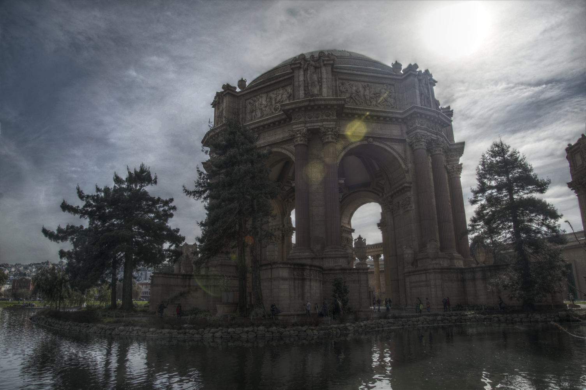

Jun Hu
I am a research engineer lead of camera algorithm at Apple Inc. During my tenure at Apple, I am lucky to lead or involve in the research and engineering works behind Deep Fusion, Smart HDR, Smart Camera, Portrait Mode and Burst mode.
I received PhD from Duke University in 2014 and I did my bachelor at Wuhan University in 2009. During my PhD, I was an intern at Nvidia research with Dr. Kari Pulli and Dr. Orazio Gallo in Fall 2011 and Spring 2013.
I am interested in computer vision, machine learning, image processing and engineering.
Selected Publications
|  | Jun Hu, Orazio Gallo, Kari Pulli and Xiaobai Sun HDR Deghosting: How to deal with Saturation ? CVPR, Portland, Oregon, June 2013 Website |

|
Jun Hu, Orazio Gallo and Kari Pulli Exposure Stacks of Live Scene With Hand-held Cameras ECCV, Florence, Italy, Oct. 2012 Website |